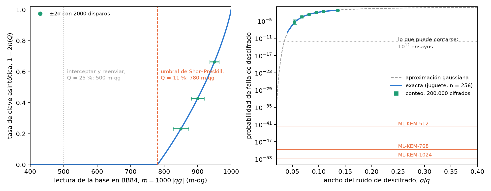
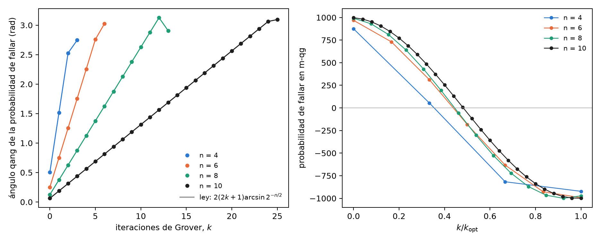
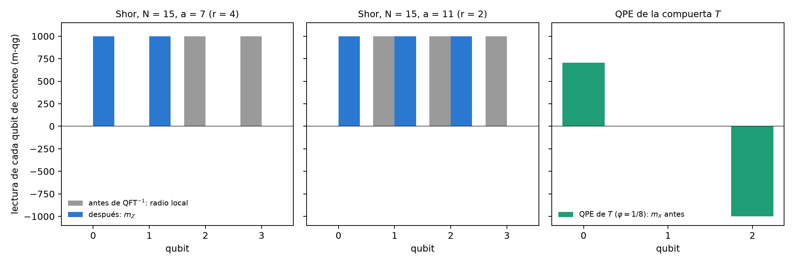

16 Demarcación: criptografía cuántica frente a criptografía post-cuántica (PQC)
La Parte VI trata la seguridad. Antes de leer en qg la distribución de claves (capítulo 17) y los números aleatorios certificados (capítulo 18), conviene trazar la frontera. Hay dos respuestas a la computadora cuántica que comparten la palabra “cuántica” y casi nada más. La criptografía cuántica (QKD, QRNG) usa qubits: su seguridad descansa en una medición física, y por eso entra en la ecuación de probabilidad del capítulo 1. La criptografía post-cuántica (PQC) es software clásico que corre en computadoras comunes: su seguridad descansa en la dificultad de un problema matemático, y no hay qubit que leer. Este capítulo dice dónde pasa la línea, con números, y qué lee qang a cada lado.
16.1 Desde la base: qué probabilidades hay a cada lado
Cualquier probabilidad \(p_0\) entra en la ecuación del capítulo 1: tiene ángulo qang \(\theta=2\arccos\sqrt{p_0}\) y lectura \(m=1000(1-2p_1)\) m-qg. La pregunta no es si se puede escribir, sino si la lectura dice algo.
- En QKD, la probabilidad que decide la seguridad es la tasa de error de bit (QBER) de una medición en una base. Es la probabilidad de un qubit, y su lectura es la del capítulo 17: \(Q=(1-|qg|)/2\), es decir, \(m=1000\,|qg|=1000(1-2Q)\).
- En PQC, la única probabilidad del esquema es la de que el descifrado falle, \(\delta\). Para ML-KEM, el estándar FIPS 203 la acota en \(2^{-138{,}8}\), \(2^{-164{,}8}\) y \(2^{-174{,}8}\) para los tres niveles. Escrita en m-qg es \(m=1000-3{,}3\times10^{-39}\) en el mejor caso: está pegada al polo, y no hay operador hermítico, base de medición ni esfera de Bloch detrás de ese número.
La seguridad de la PQC, además, no es esa probabilidad: es la dificultad del problema de retículos (aprender con errores en módulos, MLWE), que no es una frecuencia de nada. Esa es la demarcación en una línea: qang lee probabilidades de mediciones; la PQC no tiene mediciones.
16.2 La naturaleza de la PQC
Los estándares del NIST de agosto de 2024 son tres: ML-KEM (FIPS 203, antes Kyber), un mecanismo de encapsulamiento de claves sobre retículos; ML-DSA (FIPS 204, antes Dilithium), firmas sobre retículos; y SLH-DSA (FIPS 205, antes SPHINCS+), firmas basadas sólo en funciones hash. En 2025 se eligió además HQC, basado en códigos correctores, como segundo mecanismo de claves. Todos son aritmética entera: polinomios módulo \(q=3329\) en ML-KEM, árboles de hash en SLH-DSA. Ninguno prepara un estado, aplica una compuerta ni mide.
En ML-KEM, descifrar es restar y redondear: el mensaje sobrevive si un ruido acumulado (la suma de muchos productos de coeficientes pequeños) queda dentro de \(\pm q/4\). Si no, el descifrado falla. Esa es la \(\delta\) de arriba.
16.3 La falla de descifrado se cuenta, no se mide en un qubit
Para ver qué haría qang con \(\delta\), el script de figuras construye un esquema de juguete con el mismo mecanismo: ruido \(e=\sum_{i<2n}a_ib_i+c\) con \(a_i,b_i,c\) de la distribución binomial centrada de ML-KEM, \(n=256\), \(q=3329\), sin la compresión del estándar (que en ML-KEM es la mayor parte de la falla), y con el ancho \(\eta\) como perilla. La probabilidad de falla se calcula exacta (convolución módulo \(q\)) y se cuenta con 200 000 cifrados simulados.
| \(\eta\) | \(\sigma/q\) | falla exacta | contada | lectura (m-qg, IC 95 %) |
|---|---|---|---|---|
| 16 | 0,054 | \(5{,}1\times10^{-6}\) | 1 de 200 000 | 1000,0 [999,9; 1000,0] |
| 20 | 0,068 | \(2{,}5\times10^{-4}\) | 60 | 999,4 [999,2; 999,5] |
| 24 | 0,082 | \(2{,}2\times10^{-3}\) | 437 | 995,6 [995,2; 996,0] |
| 32 | 0,109 | \(2{,}2\times10^{-2}\) | 4360 | 956,4 [955,1; 957,7] |
| 40 | 0,136 | \(6{,}6\times10^{-2}\) | 13 072 | 869,3 [867,1; 871,4] |
El conteo coincide con la cuenta exacta, y qang.probability.analyze lo lee en m-qg con su intervalo. Pero esa lectura es la proporción de Wilson con otra unidad: no hay ángulo de un estado detrás. Y donde vive la PQC real no llega ningún conteo (Figura 16.1, derecha). Para ver una sola falla de ML-KEM-512 hacen falta del orden de \(1/\delta\approx6\times10^{41}\) descifrados; con \(10^{12}\) ensayos, lo más que se puede contar, el piso queda 30 órdenes de magnitud por encima. La regla de disparos del capítulo 1 dice lo mismo en m-qg: junto al polo, \(\sigma_m\approx2000\sqrt{\delta/N}\), y para que baje del corrimiento \(2000\,\delta\) hace falta \(N>1/\delta\). La \(\delta\) de la PQC se demuestra, no se mide.

Del otro lado de la línea (Figura 16.1, izquierda), la cantidad que decide la seguridad de BB84 está en el centro de la escala. La tasa asintótica de Shor–Preskill, \(1-2h(Q)\), se anula en \(Q=11{,}0\) %, que es \(m=780\) m-qg; interceptar y reenviar da \(Q=25\) %, \(m=500\). Con 2000 disparos, \(\sigma_m\) es 11,8, 9,7 y 7,0 m-qg en 850, 900 y 950 m-qg: el margen hasta el umbral se resuelve con holgura. Es una probabilidad de un qubit, legible y con barra de error; el capítulo 17 la usa para separar al espía del ruido.
16.4 El vector de ataque cuántico: Grover
La computadora cuántica sí es cuántica, y sus ataques sí entran en la base. El de Grover contra una clave de \(n\) bits tiene probabilidad de fallar, después de \(k\) iteraciones,
\[ p_{\text{falla}}=\cos^2\!\big((2k+1)\,\beta\big),\qquad \beta=\arcsin 2^{-n/2}, \]
que es la ecuación de probabilidad con ángulo qang \(2(2k+1)\beta\): cada iteración avanza el ángulo qang en \(4\beta\), en línea recta. Se comprobó con los circuitos de qang.algorithms para \(n=4\), 6, 8 y 10: el ángulo de la probabilidad exacta coincide con la ley a \(10^{-10}\) rad (Figura 16.2). En m-qg, la falla baja de +1000 a −1000 siguiendo un coseno, y cruza el ecuador (éxito 1/2) a mitad de camino.

Para AES-128 el paso es \(4\arcsin2^{-64}=2{,}2\times10^{-19}\) rad por iteración, y llegar al polo exige \(1{,}4\times10^{19}\) iteraciones en serie, cada una un circuito AES completo; para AES-256, \(2{,}7\times10^{38}\). La respuesta de la PQC al ataque es duplicar el largo de la clave simétrica, y la geometría lo explica: el ángulo avanza como \(2^{-n/2}\), de modo que Grover reduce a la mitad los bits de seguridad y nada más.
16.5 El vector de ataque cuántico: Shor y la estimación de fase
El ataque que rompe RSA y las curvas elípticas, y que la PQC esquiva, es el algoritmo de Shor: estimación de fase (QPE) sobre la multiplicación modular. Las notas (§13) muestran que la QPE recupera fases exactas, y el índice del libro decía que “el registro de autoestados proyecta a \(qg_Z=-1\) sin resolver la fase”. Eso es cierto para la QPE de un autoestado, y el cálculo exacto de este capítulo dice hasta dónde llega una lectura qg en el caso de Shor (Figura 16.3).
QPE de un autoestado. Con la compuerta \(T\) sobre \(|1\rangle\) (\(\varphi=1/8\)), el registro objetivo queda en \(m_Z=-1000\) y no lleva información: la fase vive en el registro de conteo. Ahí, antes de la QFT inversa, el qubit \(k\) tiene \(m_X=1000\cos(2\pi2^k\varphi)\): 707, 0 y −1000 m-qg. Cada qubit lleva un bit de la fase en su ángulo qang, que es la estimación de fase iterativa de Kitaev.
Shor para \(N=15\). El registro de trabajo no está en un autoestado sino en una superposición de los \(r\) autoestados, y los qubits de conteo quedan entrelazados con él. Con cuatro qubits de conteo, antes de la QFT inversa:
| caso | radio local de cada qubit de conteo, antes (m-qg) | \(m_Z\) de cada qubit, después | resultados |
|---|---|---|---|
| \(a=7\) (\(r=4\)) | 0, 0, 1000, 1000 | 1000, 1000, 0, 0 | 0, 4, 8, 12 |
| \(a=11\) (\(r=2\)) | 0, 1000, 1000, 1000 | 1000, 1000, 1000, 0 | 0, 8 |
| \(N=21\), \(a=2\) (\(r=6\)), seis qubits | 0, 0, 0, 0, 0, 0 | 0, 250, 312, 328, 332, 0 | picos en 0, 11, 21, 32, 43, 53 |
Para \(N=15\) el orden se lee qubit por qubit: el número de qubits con radio cero antes de la QFT, o con \(m_Z=0\) después, es \(\log_2 r\). Pero es un accidente de \(N=15\), donde \(r\) es potencia de 2. Con \(N=21\) y \(r=6\), todos los radios locales son cero y los \(m_Z\) de después no dicen 6: el orden está en la distribución conjunta, y se extrae con fracciones continuas. El registro de trabajo tampoco ayuda: para \(a=7\) sus qubits leen \(m_Z=\pm500\), la mezcla de 1, 7, 4 y 13.

La conclusión vale para todo el capítulo: las lecturas de un qubit ven la fase cuando hay un autoestado, y la pierden cuando la información está en las correlaciones. Es la limitación 3 de las notas (§14) en otra forma.
16.6 La demarcación
| criptografía cuántica (QKD, QRNG) | criptografía post-cuántica (PQC) | ataque cuántico (Grover, Shor) | |
|---|---|---|---|
| soporte | qubits, fotones | enteros, polinomios, hash | qubits |
| la seguridad descansa en | una medición física | la dificultad de MLWE, de códigos o del hash | — |
| la probabilidad clave | QBER, en el centro de la escala (780 m-qg) | \(\delta\le2^{-138{,}8}\), pegada al polo | falla de Grover, éxito de Shor |
| ¿la lee qang? | sí: capítulos 17 y 18 | no: no hay qubit; \(\delta\) sólo se cuenta, y no se puede | en parte: Grover sí; Shor sólo por qubit cuando hay autoestado |
qang es una herramienta de capa física: lee lo que sale de una medición sobre un qubit. No dice nada sobre la dificultad de un retículo, y un módulo que pretendiera “medir en qg” la seguridad de ML-KEM sería un error de categoría.
16.7 Lo que queda pendiente
No existe un módulo qang.crypto, y este capítulo no propone uno. La criptografía del proyecto vive en examples/ (bb84_qg_eve_vs_noise.py, bb84_finite_key_qg.py, bb84_attacks_beyond_ir_qg.py, qrng_qg_certified.py, ionq_sim_bb84.py, ionq_sim_qrng.py) y en manuscript/crypto. Quedan abiertas dos preguntas: si la lectura por qubit de la QPE iterativa (un qubit de conteo reciclado) ahorra disparos frente a la QPE con QFT cuando hay ruido, y una corrida de Shor para \(N=15\) en un dispositivo, leída por qubit; ninguna tiene todavía circuito ni predicción escrita.
16.8 Sin qang y con qang
| acción | sin qang | con qang | diferencia |
|---|---|---|---|
| leer la seguridad de BB84 | QBER y \(1-2h(Q)\) | umbral en 780 m-qg, \(\sigma_m\) 7–12 m-qg con 2000 disparos | unidad; el detalle está en el capítulo 17 |
| estimar la falla de descifrado de la PQC | conteo con intervalo de Wilson | la misma proporción en m-qg | ninguna: es la misma estadística, y no hay estado detrás |
| la falla de ML-KEM | prueba matemática (\(\le2^{-138{,}8}\)) | \(1000-3\times10^{-39}\) m-qg, sin resolución posible | ninguna; qang no se aplica |
| describir el ataque de Grover | \(\sin^2((2k+1)\beta)\) | el ángulo qang avanza \(4\beta\) por iteración, en línea recta | equivalente: es la geometría estándar de Grover con otro nombre, aunque se lee de un vistazo |
| leer la fase en la QPE de un autoestado | histograma del registro tras la QFT | \(m_X\) de cada qubit de conteo: un bit por qubit | a favor, modesto: la QPE iterativa leída en la escala del capítulo 1 |
| leer el orden en Shor | fracciones continuas sobre el histograma | radios locales y \(m_Z\) por qubit | en contra salvo para \(r\) potencia de 2: con \(N=21\) todo lee cero |
Balance. Este es el capítulo donde qang aporta menos, y su valor está en decirlo. Del lado de la PQC no hay nada que leer; del lado del ataque, Grover es una ecuación de probabilidad y se lee limpio, y Shor muestra el límite conocido de las lecturas de un qubit. Del lado cuántico, la QBER sí es una lectura qang, y los dos capítulos siguientes la usan.
16.9 En código
import math
from qang import algorithms as al
from qang import probability as pb
pb.milliqang_from_p0(1 - 0.11) # 780: el umbral de BB84 en m-qg
pb.analyze(200_000 - 437, 200_000).milliqang # (995.6, 995.2, 996.0): una falla contada, en m-qg
p = 1 - al.grover_success_probability(8, 1, 5)
math.acos(2 * p - 1) # 2(2*5+1) asin(2**-4) = 1.376: el ángulo de Grover16.10 Resumen
- La criptografía cuántica tiene mediciones y entra en la ecuación de probabilidad; la PQC es aritmética clásica y no.
- La seguridad de BB84 es una línea en m-qg: la tasa de clave se anula en 780 m-qg, en el centro de la escala.
- La única probabilidad de ML-KEM, la falla de descifrado, está a \(3\times10^{-39}\) m-qg del polo: se demuestra, no se mide; contarla es imposible, y leerla en m-qg es la misma proporción con otra unidad.
- El ataque de Grover avanza el ángulo qang \(4\arcsin2^{-n/2}\) por iteración, en línea recta; de ahí que duplicar la clave baste.
- En la QPE de un autoestado cada qubit de conteo lleva un bit de la fase en \(m_X\); en Shor la información está en las correlaciones, y las lecturas de un qubit sólo ven el orden cuando es potencia de 2.
Notas bibliográficas
Los estándares post-cuánticos son FIPS 203, 204 y 205 (National Institute of Standards and Technology 2024b, 2024a, 2024c), y la selección de HQC está en Alagic et al. (2025). Los vectores de ataque cuántico son Grover (Grover 1996) y Shor (Shor 1997), este último sobre la estimación de fase de Kitaev (1995). BB84 es Bennett y Brassard (2014) (reimpresión del original de 1984). Las notas de investigación numeradas (§) que cita el capítulo y los scripts que lo verifican están en el repositorio (Monteverde 2026a); la definición de la unidad qang, en Monteverde (2026b).